Temario
-
 Unidad 2-Comprendiendo los Algoritmos.
Unidad 2-Comprendiendo los Algoritmos.


Conceptos básicos
Sobre la historia de los Algoritmos
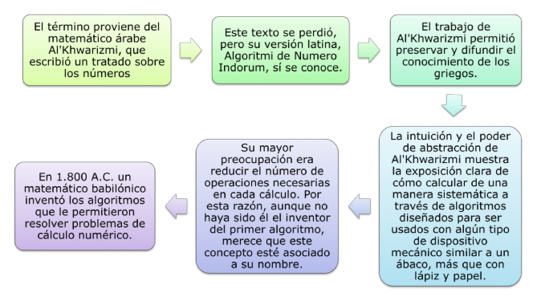
La intuición y el poder de abstracción de Al'Khwarizmi muestra la exposición clara de cómo calcular de una manera sistemática a través de algoritmos diseñados para ser usados con algún tipo de dispositivo mecánico similar a un ábaco, más que con lápiz y papel. Su mayor preocupación era reducir el número de operaciones necesarias en cada cálculo. Por esta razón, aunque no haya sido él el inventor del primer algoritmo, merece que este concepto esté asociado a su nombre.
Los babilonios que habitaron en la antigua Mesopotamia, empleaban unas pequeñas bolas hechas de semillas o pequeñas piedras, a manera de "cuentas" y que eran agrupadas en carriles de caña. Más aún, en 1.800 A.C. un matemático babilónico inventó los algoritmos que le permitieron resolver problemas de cálculo numérico. En 1850 A.C., un algoritmo de multiplicación similar al de expansión binaria es usado por los egipcios.
La Maquina de Turing
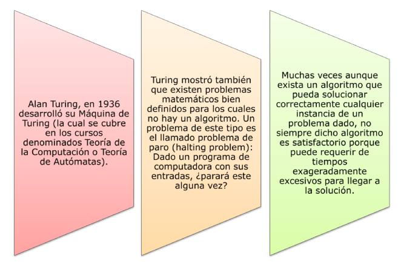
Turing probó que no hay un algoritmo que pueda resolver correctamente todas las instancias de este problema. Alguien podría pensar en encontrar algunos métodos para detectar patrones que permitan examinar el programa para cualquier entrada. Sin embargo, siempre habrá sutilezas que escapen al análisis correspondiente. Alguna persona más suspicaz, podría proponer simplemente correr el programa y reportar éxito si se alcanza una declaración de fin. Desgraciadamente, este esquema no garantiza por sí mismo un paro y en consecuencia el problema no puede ser resuelto con los pasos propuestos.
Definición de Algoritmo
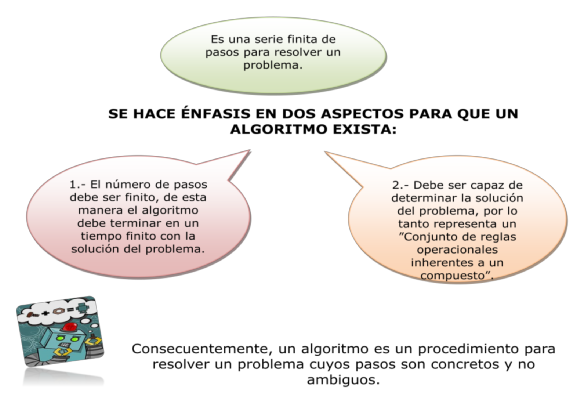
Sería un error creer que los algoritmos son exclusivos de la informática. También son algoritmos los que aprendemos en la escuela para multiplicar y dividir números de varias cifras. De hecho, el algoritmo más famoso de la historia se remonta a la antigüedad: se trata del algoritmo de Euclides para calcular el máximo común divisor.
Siempre que se desee resolver un problema hay que plantearse qué algoritmo utilizar. La respuesta a esta cuestión puede depender de numerosos factores, a saber, el tamaño del problema, el modo en que está planteado y el tipo y la potencia del equipo disponible para su resolución. Los algoritmos son los procedimientos que se construyen para la resolución de cualquier problema. De este modo, cuando se refiere a la construcción de un programa, nos estamos refiriendo a la construcción de un algoritmo.
Los algoritmos los encontramos, o mejor, los ejecutamos a lo largo de nuestras actividades diarias; por ejemplo, cuando hacemos una llamada telefónica, tenemos en cuenta un conjunto de instrucciones mínimas y el orden en el cual debemos ejecutarlas para conseguir comunicarnos con alguien en particular; o cuando consultamos un diccionario, cuando se prepara un menú, etc.
Ya que todo algoritmo será llevado a un lenguaje de programación, en su mayoría desde el modelo estructurado, es necesario conocer ciertos elementos que comúnmente son compartidos por todos los lenguajes sin importar el modelo.
Eficiencia en los algoritmos
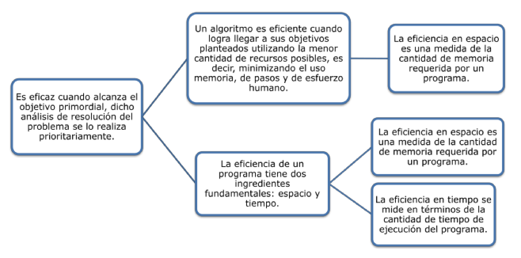
Lo anterior depende del tipo de computador y compilador, por lo que no se estudiará aquí la eficiencia de los programas, sino la eficiencia de los algoritmos. Asi mismo, este análisis dependerá de si trabajamos con máquinas de un solo procesador o de varios de ellos. Centraremos nuestra atención en los algoritmos para máquinas de un solo procesador que ejecutan una instrucción y luego otra.
Caracteristicas de los algoritmos
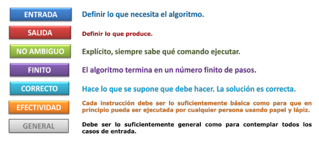
Así podemos, decir que un Algoritmo es un conjunto finito de instrucciones precisas para resolver un problema. Un algoritmo es un método o proceso seguido para resolver un problema, si este problema es visto como una función, entonces el algoritmo toma una entrada y la transforma en la salida.
Un problema es una función o asociación de entradas con salidas. Un problema puede tener muchos algoritmos. Por tanto, un algoritmo es un procedimiento para resolver un problema cuyos pasos son concretos y no ambiguos. El algoritmo debe ser correcto, de longitud finita y debe terminar para todas las entradas. Un programa es una instanciación de un algoritmo en un lenguaje de programación.
Razones para estudiar los algoritmos
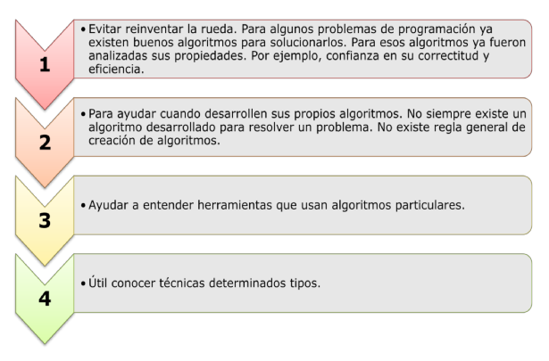
Componentes de los algoritmos
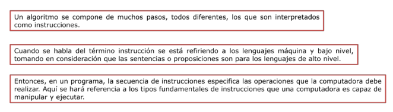
En casi todos los lenguajes las intrucciones basicas y comunes pueden dividirse en:
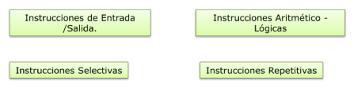
Entradas y Salidas: Tipos de Datos
El ingreso de datos es importante para que la computadora realice los cálculos; esta operación es la entrada, luego, estos datos se convertirán en resultados y serán la salida. A la entrada se le conoce como operación de Lectura (read). Esta operación de lectura se realiza a través de los dispositivos de entrada que son (teclado, unidades de disco, CD-Rom, etc.). La operación de salida se realiza por medio de dispositivos como (monitor, impresora, etc), a esta operación se le conoce como escritura (write).

Booleanos, este tipo de dato es aquel que sólo admite dos tipos de valores, los que son verdadero (true) o falso (false). Los dos son usados para la representación de alternativas (si/no) que se dan según la condición que se plantee, es decir, si se quiere que el programa evalúe una condición determinada, ésta puede ser verdadera o falsa, dependiendo de las reglas que se hayan planteado anteriormente.
Caracter, forman un conjunto finito y ordenado que la computadora puede reconocer. Un dato tipo caracter contendrá solamente un caracter. En muchos lenguajes tambien se encuentran los tipo String, los cuales representan cadenas de caracteres.
Variables y Constantes
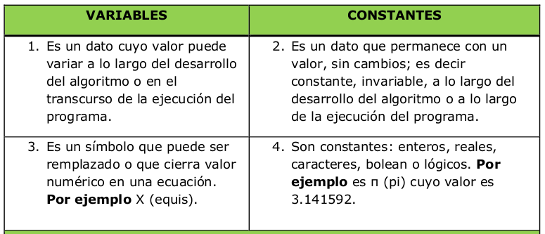
Entonces una variable se conoce como un objeto, o partida de datos cuyo valor puede cambiar durante la ejecución del algoritmo o programa. A las variables se les conoce o identifica por los atributos siguientes: nombre que lo asigna y tipo que describe el uso de la variable. Una variable es un símbolo que puede ser remplazado o que toma un valor numérico en una ecuación o expresión matemática en general. Por ejemplo X (equis).
Las constantes son datos cuyos valores no cambian, pero existen datos cuyos valores sí varían durante la ejecución del programa, a éstos los llamamos variables. En la mayoría de los lenguajes de programación se permiten diferentes tipos de constantes: enteras, reales, caracteres y boolean o lógicas, quienes representan datos de estos tipos.
Ahora bien, ¿porque utilizar variables cuando se deben introducir números? La respuesta viene dada en función de diferenciar a quien diseña el programa y para quien se diseña. Si es un programador, éste conoce el programa, el orden lógico y secuencial de su estructura e instrucciones, el usuario, por otro lado, no conoce esto, por lo que su función es utilizar el programa, con valores de entrada casi siempre diferentes. Si se necesitaran valores fijos o invariables se utilizarían constantes.
De las definiciones anteriores podrian resultar los siguientes ejemplos:
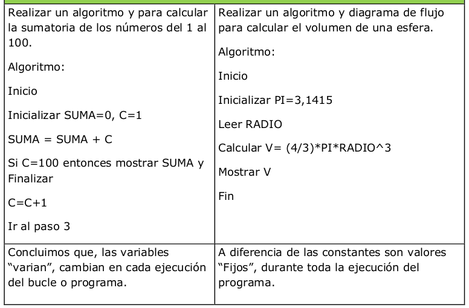
Procedimientos: Formulas y Ecuaciones
Uno de los requerimientos básicos para aprender algoritmos es conocer sobre matemáticas y algebra, pues estas asignaturas (que forman parte de las ciencias exactas) nos enseñan entre otros aspectos la estructura de los cálculos. En los algoritmos aritméticos se utilizan los conocimientos de estas disciplinas para solucionar problemas.
Los procedimientos, que en ocasiones representan un conjunto de ecuaciones, pueden ser expresados en el algoritmo como instrucciones separadas pero que forman parte de un todo.
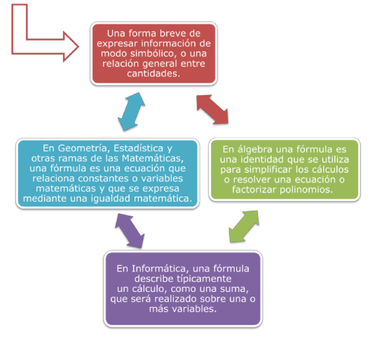
Una ecuacion es...
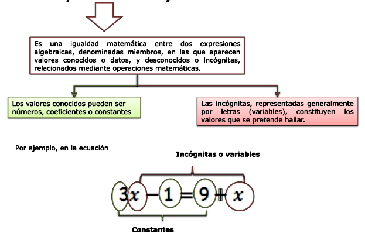
En Geometría, Estadística y otras ramas de las Matemáticas, una fórmula es una ecuación que relaciona constantes o variables matemáticas y que se expresa mediante una igualdad matemática. En álgebra una fórmula es una identidad que se utiliza para simplificar los cálculos o resolver una ecuación o factorizar polinomios.
En Informática, una fórmula describe típicamente un cálculo, como una suma, que será realizado sobre una o más variables. A menudo, las fórmulas tienen el formato implícito de una instrucción o comando de ordenador. Sin embargo, no pueden manejar una lógica simbólica y sólo trabajan con cantidades numéricas, sistema binario y álgebra de Boole, y deben respetarse los requerimientos sobre las unidades en la introducción de datos.
Aun cuando en ocasiones se deba resolver una ecuación compleja es conveniente dividirla en varias ecuaciones más simples. Esta forma de proceder obedece al principio de modularidad de la programación estructurada. Los procedimientos, que en ocasiones representa un conjunto de ecuaciones pueden ser expresados en el algoritmo como instrucciones separadas pero que forman parte de un todo.
Expresiones
Son la combinación de constantes, variables, símbolos de operación, paréntesis y nombres de funciones especiales, idea que puede ser utilizada en notaciones de matemática tradicional. Los valores de las variables nos permitirán determinar el valor de las expresiones, debido a que éstos están implicados en la ejecución de las operaciones indicadas.
Estas constan de operandos y operadores. Según el tipo de objetos que manipulan, pueden clasificarse en:
Expresiones Aritmeticas
Son utilizadas para construir formulas matemáticas. Las variables y constantes uilizadas son de naturaleza numérica, es decir, números enteros o reales, y las operaciones a efectuar son de orden aritmético.

Expresiones Relacionales
Los operadores relacionales o de relación permiten realizar comparaciones de valores de tipo numérico o carácter. Estos sirven para expresar las condiciones en los algoritmos.

Expresiones Logicas
Cuyo valor es siempre verdadero o falso, Por tanto existen dos constantes lógicas, verdadera (true) y falsa (false). Estas expresiones se forman combinando constantes lógicas, variables lógicas y otras expresiones lógicas, utilizando los operadores lógicos not, and y or.